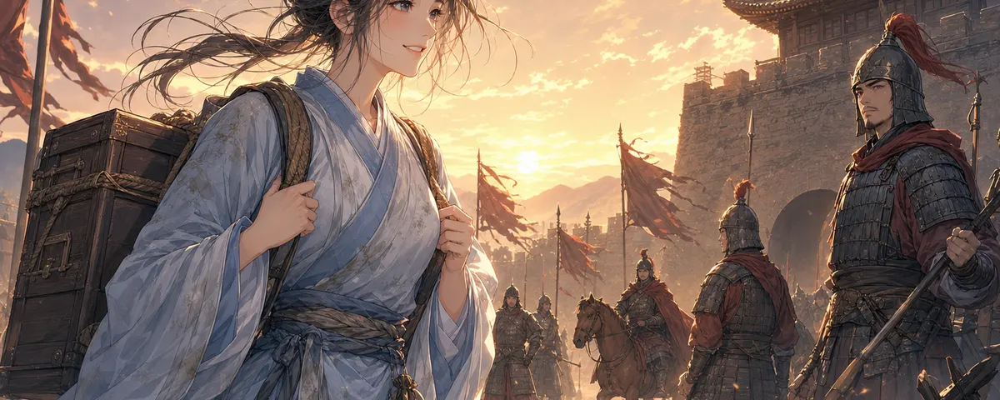
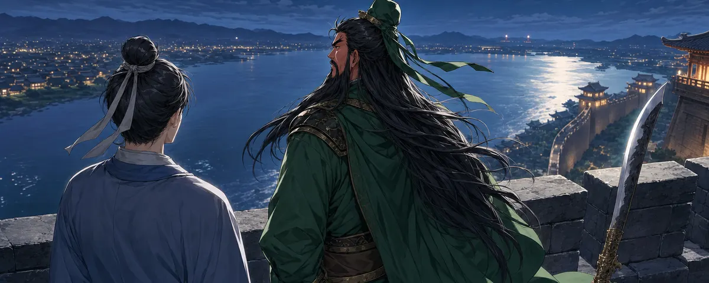

SAMPLE 01 · scene-v2_wenzhi
温芷 · 暮色药箱
暮色中的房间，温芷收拾药箱，子衡从门口望向她。
打开原图 ↗原图 1983 × 793 PNG游戏目标 1200 × 480（预览框）角色参考 wenzhi
展开原角色与既有场景对照

三国 · 谋士 / 缺图候选 / 2026-10-27
沿用仓库里的角色参考和既有场景画风。先检查人物、场景与游戏条幅构图，再决定是否采用。
SAMPLE 01 · scene-v2_wenzhi
暮色中的房间，温芷收拾药箱，子衡从门口望向她。
打开原图 ↗
SAMPLE 02 · scene-v3_xiang
江陵军帐中，关羽查看军令，桌上铺着河流地图。
打开原图 ↗